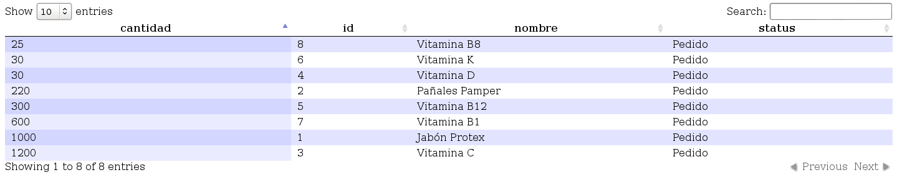

Ver datos usando flujos de trabajo¶
En esta sección de explicar las acciones necesarias para obtener reportes asociados a la configuración de datos del directorio .safet/ (PySafet). Tomando como ejemplo el caso inventario explicaremos las acciones a realizar para obtener un listado de todos los datos.
A continuaciones mostraremos las siguientes acciones:
1° PRIMERA ACCION (Tarea “vRegistrado”)¶
Listaremos los productos que se encuentran registrados (en estado registrado), con la tarea vRegistrado la cual conocimos en los pasos anteriores:
Ver también
<!--
**************
| Registrado |
**************
-->
<task title="en inventario" id="Registrado">
<port side="forward" type="split">
<connection query="true" options="" source="final"/>
</port>
<!-- nombre de las columnas(id,nombre,status), variable(id="vRegistrado")-->
<variable config="1" documentsource="select id,nombre,status from productos"
type="sql" tokenlink="" id="vRegistrado" rolfield="(select rol from productos_registro
where productoid=productos.id and regstatus='Registrado') as rol" scope="task"
timestampfield="(select fecha from productos_registro
where productoid=productos.id and regstatus='Registrado') as fecha"/>
</task>
1° PRIMER PASO¶
- Crearemos un directorio en nuestro <HOME>/JsonInterfaz
$ mkdir $HOME/JsonInterfaz
- Crearemos un directorio que creamos JsonInterfaz/
$ cd $HOME/JsonInterfaz
2° SEGUNDO PASO¶
Crearemos un archivo .py por ejemplo ListarProducto.py en el directorio JsonInterfaz/:
JsonInterfaz$ touch ListarProducto.pyAbrimos el archivo ListarProducto.py, insertamos el siguiente código:
# -*- coding: utf-8 -*- import Safet import os myhome = os.getenv("HOME") mymedia = myhome + "/tmp" myurl = "http://localhost" myinflow = Safet.MainWindow(myhome) myinflow.setMediaPath(mymedia ) myinflow.setHostURL(myurl) myconsult = u"operacion:Listar_datos_general \ Cargar_archivo_flujo: /home/cenditel/.safet/flowfiles/productos.xml \ Variable: vRegistrado" result = myinflow.login("admin","admin") if not result: print "Authentication failed" exit() result = myinflow.toInputConsole(myconsult) if not result: print "Consult failed error: %s" % (myinflow.currentError()) exit() print u"%s" % (myinflow.currentJSON())Nota
La operación seleccionada es “Listar_datos”, el archivo donde se realiza la operación es “productos.xml” y el directorio donde se encuentra es <HOMR>.safet/flowfiles/.
La variable seleccionada “vRegistrado” se define los siguiente:
- La variable debe estar definida en el archivo “productos.xml”.
- La operación Listar_datos esta definida en el archivo defconsole.xml que se encuentra en el directorio <HOME>.safet/input/
3° TERCER PASO¶
- Ejecutamos el archivo ListarProducto.py desde la consola de comando como usuario normal:
JsonInterfaz$ python ListarProducto.pyNota
Al llamar el método toInputConsole con las opciones dicha anteriormente se generaría el siguiente mensaje Json.
QFSFileEngine::open: No file name specified # Aquí nos indica que se esta conectando a la base de datos # que esta en el directorio <HOME>.sefet/ QSqlDatabasePrivate::removeDatabase: connection '/home/cenditel/.safet/mydb.db' is still in use, all queries will cease to work. QSqlDatabasePrivate::removeDatabase: connection '/home/cenditel/.safet/mydb.db' is still in use, all queries will cease to work. QSqlDatabasePrivate::removeDatabase: connection '/home/cenditel/.safet/mydb.db' is still in use, all queries will cease to work. # La variable que esta utilizando { "safetvariable" : "vRegistrado", "safetkey" : "", "safettitle" : "vRegistrado", "safetreport" : "operacion:Listar_datos_general \ Cargar_archivo_flujo:/home/cenditel/.safet/flowfiles/productos.xml \ Variable: vRegistrado", # Aquí nos dice que hay dos registro en la db "safetlistcount" : "2", # Nos mostrara los datos en una lista "safetlist" : [ # Aqui nos aparece el nombre de las columnas(id,nombre,status) y # sus datos {"id":"1", "id":"1", "nombre":"Jabón Protex", "status":"Registrado"}, {"id":"2", "id":"2", "nombre":"Pañales Pamper","status":"Registrado"} ], #Nos mostrara la columnas es decir el keys "safetcolumns" : [ { "key": "id","label":"id","width":"10", "resizeable":"true","sortable":"true"}, { "key": "id","label":"id","width":"10", "resizeable":"true","sortable":"true"}, { "key": "nombre","label":"nombre","width":"90", "resizeable":"true","sortable":"true"}, { "key": "status","label":"status","width":"90", "resizeable":"true","sortable":"true"} ] }
Combinación de Json con HTML(javascript)¶
Listaremos los datos con interfaz gráfica de nuestro Json, con los siguientes pasos:
1° PRIMER PASO¶
- Crearemos un archivo .py por ejemplo (ScriptJson.py), en el directorio JsonInterfaz/:
JsonInterfaz$ touch ScriptJson.py
2° SEGUNDO PASO¶
- Abrimos el archivo que creamos .py(ScriptJson.py) insertamos el siguiente código:
#!/user/bin python # -*- coding: utf-8 -*- # importamos la librerías a utilizar import Safet import os import json #función para convertir el json en datos con listas def jsonToJquery(myoldarray): # Variables que me van a almacenar listar o arreglos mynewarray = [] currcolumns = [] currkeys = [] # Una variable para almacenar stringcolumn = "" # Estructura de repetición para obtener # Las keys es decir los dato de # las columnas (id,nombre,status) for reg in myoldarray: # reg.keys() me obtiene una en una la columnas currkeys = reg.keys() myvalue = "" regarray = [] # Estructura de repetición anidada # Se obtienen los datos de la columnas # es decir del (id,nombre,status) for currkey in currkeys: # optienes el datos myvalue = reg[currkey] # Insertamos el dato dentro de la lista regarray[] regarray.insert(0,myvalue) # Se añade la lista regarray[] es decir datos de las tablas mynewarray.append(regarray) #Estructura de repetición para obtener las columnas para javascript for currkey in currkeys: # Optenemos las columnas que se almacenan en un diccionario currcolumn = { "sTitle" : currkey } # Se inserta en la lista currcolumn[] el diccionario currcolumns.insert(0,currcolumn) # Retornamos la función con 2 listas # mynewarray[] que son los datos de la tablas o columnas # currcolumns[] que es un diccionario que contienes las columnas de # la tablas de los datos return (mynewarray,currcolumns) # función para escribir los datos obtenido en un archivo .js(javascript) def writeJsonData(data,columns,Variable,filename): # u"%s" para almacenan los datos y las columnas stringnewarray = u"%s" % data stringcolumns = u"%s" % columns # se abre el archivo de tipo escritura file = open(filename, "w") # Escribimos el nombre de lista para datos y para las columnas datatowrite = u"dataInventory \ = %s\n\ncolumnInventory = %s" % ( stringnewarray, stringcolumns ) # Se obtiene el valor de la variable variablewrite = "Variable = %s" % (Variable) # datatowrite.replace para que en el archivo # .js se me eliminar "u'"por "'" datatowrite = datatowrite.replace("u'","'") variablewrite = variablewrite.replace("u'","'") # salto de linea datatowrite = datatowrite + "\n" # Escribimos en archivo las dos listas file.write(datatowrite) file.write(variablewrite) # Cerramos el archivo file.close() # Mi función principal def Principal(): # Se localiza en el directorio <HOME> myhome = os.getenv("HOME") mymedia = myhome + "/tmp" myurl = "http://localhost" # Mi constructor MainWindow myinflow = Safet.MainWindow(myhome) myinflow.setMediaPath(mymedia ) myinflow.setHostURL(myurl) # Mi consulta de vRegistrado y su operación listar datos #que se encuentra en el directorio <HOME>.safe/flowfiles/ myconsult = u"operacion:Listar_datos \ Cargar_archivo_flujo: %s/.safet/flowfiles/productos.xml \ Variable: vRegistrado " % (myhome) # Nombre de usuario y si password result = myinflow.login("admin","admin") if not result: print "Authentication failed" exit() # Obtiene los el json de archivo toInputConsole.xml result = myinflow.toInputConsole(myconsult) if not result: print "Consult failed error: %s" % (myinflow.currentError()) exit() # Se obtiene mis datos json mystringdata = u"%s" % myinflow.currentJSON(); # Me carga los datos json mydata = json.loads(mystringdata) # Llámanos a la función con el nombre jsonToJquery() # para modificar el json # Se le pasa 1 parámetro # primero mydata con el nombre de la lista # Se almacenan los datos en 2 variable # La cual la función esta retornando 2 resultados # el array y las columnas del json (mynewarray,currcolumns) = jsonToJquery(mydata["safetlist"]) #Llámanos a la función que la llámanos writeJsonData() # para insertar los datos en un archivo #Se le pasan 3 parámetro: #primero mynewarray #Segundo currcolumns #Tercero el nombre del archivo .js writeJsonData(mynewarray,currcolumns,[mydata["safetvariable"]],"dataInventory.js") if __name__ == "__main__": # Mi función principal Principal()Nota
Este Script se utiliza para poder ver los datos con la libreria jquery de manara más dinamica.
3° TERCER PASO¶
- Ejecutamos el archivo .py(ScriptJson.py) desde la consola de comando como usuario normal:
JsonInterfaz$ python ScriptJson.pyNota
Nos mostrara el siguiente mensaje, significando que funciono correctamente el Script
QFSFileEngine::open: No file name specified QSqlDatabasePrivate::removeDatabase: connection '/home/cenditel/ .safet/mydb.db' is still in use, all queries will cease to work. QSqlDatabasePrivate::removeDatabase: connection '/home/cenditel/ .safet/mydb.db' is still in use, all queries will cease to work. QSqlDatabasePrivate::removeDatabase: connection '/home/cenditel/ .safet/mydb.db' is still in use, all queries will cease to work.Nota
AL ejecutar Script (ScriptJson.py) se genera un archivo javascript llamado dataInventory.js que contiene las columnas de la tabla y sus datos
4° CUARTO PASO¶
- Crearemos un archivo .html por ejemplo (InventarioJson.html), en el directorio JsonInterfaz/:
JsonInterfaz$ touch InventarioJson.html
- Abrimos el archivo que creamos .html(InventarioJson.html), insertamos el siguiente código:
<html> <head> <link rel="stylesheet" type="text/css" href="http://ajax.aspnetcdn.com/ajax/ jquery.dataTables/1.9.4/css/jquery.dataTables.css"> </head> <body> <!-- Aqui se crea la tabla dentro de la etiqueta <body>--> <table cellpadding="0" cellspacing="0" border="0" class="display" name="safettable0" id="safettable0"> </table> <script src="dataInventory.js"> </script> <script type="text/javascript" charset="utf8" src="http://ajax.aspnetcdn.com/ajax/jQuery/jquery-1.8.2.min.js"> </script> <script type="text/javascript" charset="utf8" src="http://ajax.aspnetcdn.com/ajax/ jquery.dataTables/1.9.4/jquery.dataTables.min.js"> </script> <script> $(function(){ $("#safettable0").dataTable({ "aaData": dataInventory, "aoColumns": columnInventory }); }) </script> </body> </html>Nota
En este código HTML se utilizó la librería (jquery) y la librería (jquery.dataTables) de manera interna. Para ver los datos mas dinámicos utilizando (javascript y json).
5° QUINTO PASO¶
- Abrimos con cualquier navegador web el archivo Json.html y no mostrara de la siguiente forma: Figura 28: Json
Nota

Figura 28: Json
La siguiente Figura 28: Json indica lo siguiente:
- Nos mostrara el nombre de las columnas.
- Nos mostrara los datos de cada columna.
- Nos mostrara un buscador Search.
- Nos mostrara Show que nos indicara cuantos datos quiere que se muestren en la tabla.
- Aquí esta el ejemplo, damos Clik a JSON.HTML
6° SEXTO PASO¶
En el script de Combinación de Json con HTML(javascript) del 2° SEGUNDO PASO en la función principal tenemos la consulta, la cual nos sirve para consultar los datos de las más variables, es decir, de las variables (“vPedido”,”vDisponible”,”vPor_llegar”,”vPor_agotarse”,”vAgotado”), con solo cambiarle el nombre de la variable.
Por ejemplo habíamos colocado anteriormente la variable “vRegistrado”, la cambiamos por “vDisponible” o la que sea.
Ya cambiado la variable solo se ejecuta el Script como en el 3° TERCER PASO, la cual al ejecutarlo nos generara el archivo .js(ScriptJson.py) con los datos y las columnas, como lo hacia con la variable “vRegistrado”, igualmente vemos en el navegador con el mismo código HTML del archivo (InventarioJson.html), que nos muestra el contenido con el mismo formato de la librerías (jquery y jquery.dataTables).
Ver también
Nota
Si vamos a utilizar la variable “vPedido” tómese en cuenta lo siguiente:
La varible “vPedio” necesita saber la cantidad de pedidos, para poder mostrar los datos.
Abrimos el archivo .xml(productos.xml) de directorio <HOME>.safet/flowfiles/:
Nota
Vemos el código y tenemos los atributos (id,nombre,status):
<!-- ********** | Pedido | ********** --> <task title="" id="Pedido" textualinfo=""> <port pattern="none" side="forward" type="split"> <connection query="true" options="" source="final"/> </port> <!-- atributos (id,nombre,status) --> <variable config="1" documentsource="select id,nombre,status from productos" type="sql" tokenlink="" id="vPedido" rolfield="(select rol from
productos_registro where productoid=productos.id and regstatus='Pedido') as rol" scope="task" timestampfield="(select fecha from productos_registro where productoid=productos.id and regstatus='Pedido') as fecha"/> </task>
Se le decimos que nos muestre el atributo cantidad de la siguiente manera:
Ver también
<!-- ********** | Pedido | ********** --> <task title="" id="Pedido" textualinfo=""> <port pattern="none" side="forward" type="split"> <connection query="true" options="" source="final"/> </port> <!-- atributos (id,nombre,cantidad,status) --> <variable config="1" documentsource="select id,nombre,cantidad,status from productos" type="sql" tokenlink="" id="vPedido" rolfield="(select rol from
productos_registro where productoid=productos.id and regstatus='Pedido') as rol" scope="task" timestampfield="(select fecha from productos_registro where productoid=productos.id and regstatus='Pedido') as fecha"/> </task>
Listo ya podemos utilizar la variable “vPedido” para consultar, por ejemplo cuantos productos se han pedido. Claro colocanod la varible vPedido y luego ejecutando el Script del 2° SEGUNDO PASO, como en la Figura 29: Json
Nota
Figura 29: Json
La siguiente Figura 29: Json indica lo siguiente:
- Nos mostrara el nombre de las columnas, más el atributo cantidad.
- Nos mostrara los datos de cada columna.
- Nos mostrara un buscador Search.
- Nos mostrara Show que nos indicara cuantos datos quiere que se muestren en la tabla.
{kind=link}
- Aquí esta el ejemplo, damos Clik a JSON.(HTML)